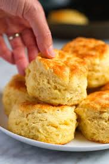

The Best Homemade Biscuit Recipe
Home

Buttery soft, and completely irresistible, this recipe will become your go-to for a quick and
delicious treat.
This recipe is made with all butter, No shortening!
With just 6 simple ingredients, you can create these delightful biscuits that are perfect
for any occasion.
These biscuits are so simple to make you will end up with perfect biscuits every single
time.
Equipment
- Box grater
- Biscuit cutter
- Mixing bowls
- Parchment paper
Ingredients
- 2 cups all-purpose flour, (250g)
- 1 Tablespoon baking powder
- 1 Tablespoon granulated sugar
- 1 Teaspoon salt
- 6 Tablespoons unsalted butter very cold (85g),
unsalted European butter is ideal, but not required
- 3/4 Cup whole milk, (177ml) buttermilk or 2% milk will also work
Instructions
- For best results, chill your butter in the freezer for 10-20 minutes before beginning this recipe.
It's ideal that the butter is very cold for light, flaky, buttery biscuits.
- Preheat oven to 425F and line a cookie sheet with nonstick parchment paper. Set aside.
- Combine flour, baking powder, sugar, and salt in a large bowl and mix well. Set aside.
- Remove butter from the refrigerater and either cut it into your flour mixture using
a pastery cutter or (preferred) use a box grater to shred the butter into small pieces and
then add to the flour mixture and stir.